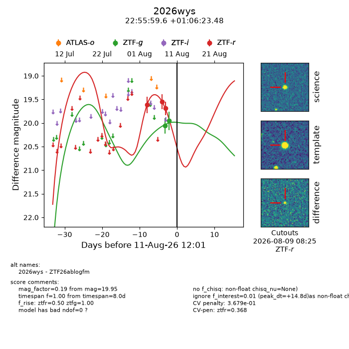
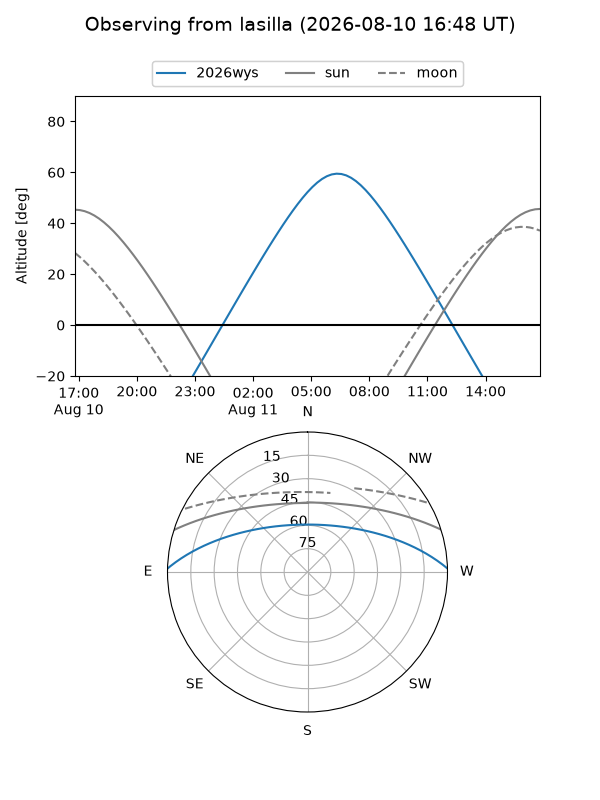
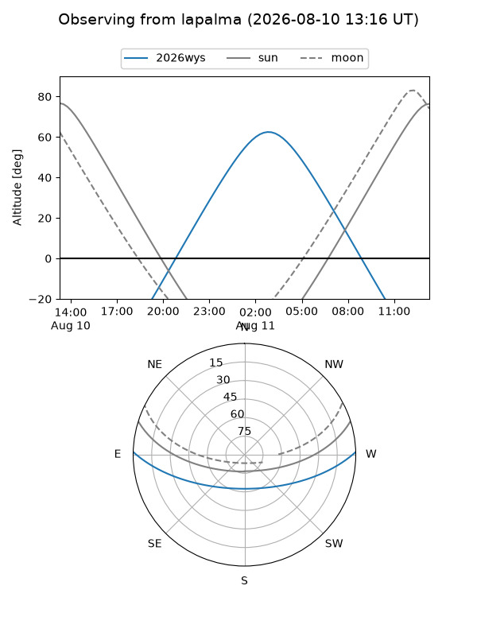
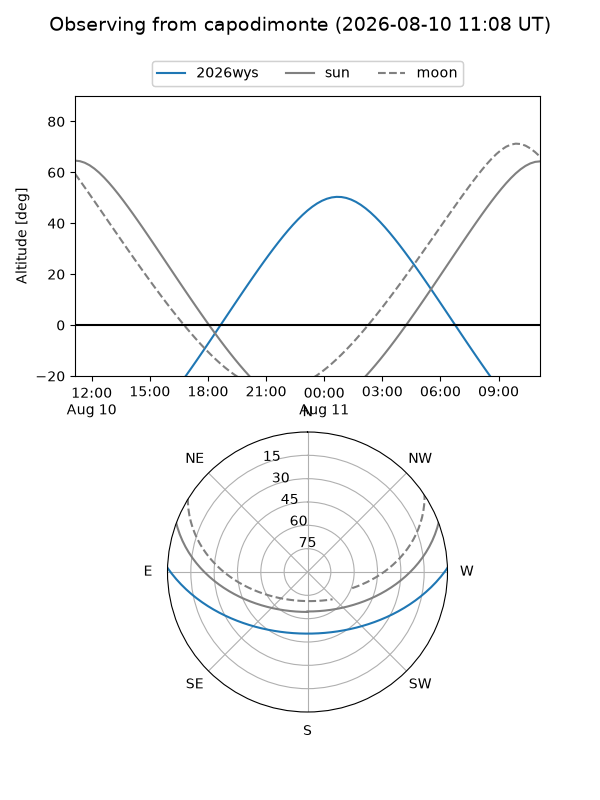
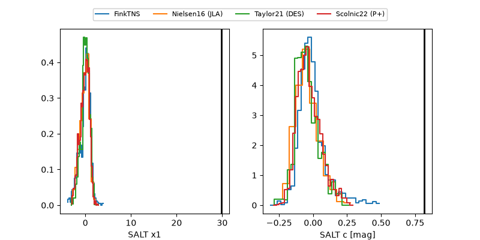

2026wys
Target 2026wys at 2026-08-11 12:04
Aliases and brokers:
FINK-ZTF: ztf.fink-portal.org/ZTF26ablogfm
Lasair-ZTF: lasair-ztf.lsst.ac.uk/objects/ZTF26ablogfm
ALeRCE-ZTF: alerce.online/object/ZTF26ablogfm
YSE-PZ: ziggy.ucolick.org/yse/transient_detail/2026wys
TNS name: wis-tns.org/object/2026wys
Direct TNS query: direct search
alt names
ZTF26ablogfm (ztf,fink_ztf)
2026wys (tns,yse)
Coordinates:
equatorial (ra, dec) = 343.9983,+1.10652
equatorial (HMS+DMS) = 22:55:59.59,+01:06:23.48
galactic (l, b) = (73.7245,-50.39820)
Flags:
TNS type: nan
peak dt: +14.8
likely cv: !!
Photometry:
last ztfg=19.95, ztfr=19.69
2 ztfg, 3 ztfr detections
Lightcurve

Visibility



Additional plots
